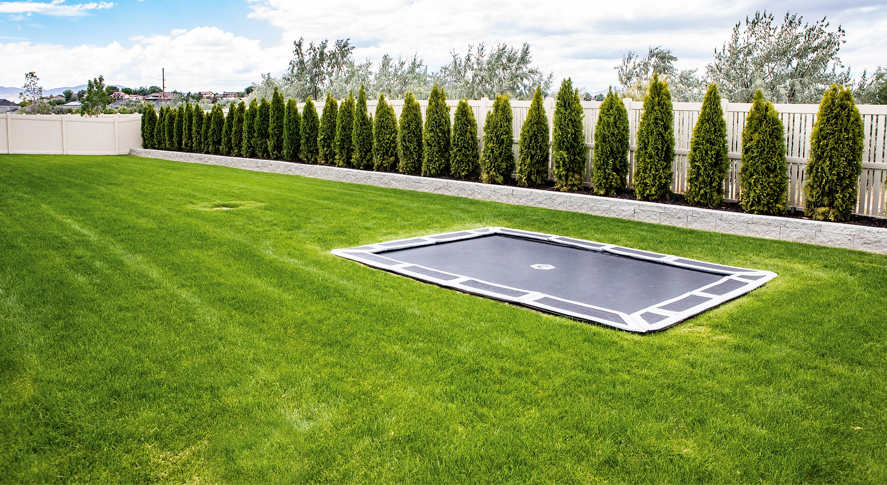

How Can I Create Privacy In My Backyard With Landscaping?

Create privacy in your backyard with landscaping by planting tall trees, shrubs, or hedges along property lines, installing privacy fences or screens, adding pergolas with climbing vines, and strategically placing outdoor structures or furniture to block sightlines from neighbors or passersby.
In a world where privacy is increasingly valued, creating a secluded oasis in your backyard can enhance both the aesthetic appeal and functionality of your outdoor space. With the right landscaping techniques, you can transform your backyard into a private retreat where you can relax, entertain, and escape from the hustle and bustle of everyday life.
At Ironhills Landscaping, we specialize in designing and implementing landscaping solutions that prioritize privacy and tranquility. Let us help you create the perfect outdoor sanctuary tailored to your needs and preferences.
Key Takeaways
Strategic Planting: Utilize trees, shrubs, and hedges to create natural barriers and define the boundaries of your outdoor space.
Privacy Screens: Install privacy screens or fences to block out unwanted views and create a sense of seclusion.
Vertical Gardens: Incorporate vertical gardens or trellises with climbing plants to add greenery and privacy to your backyard.
Outdoor Structures: Consider adding pergolas, gazebos, or outdoor curtains to create secluded areas within your backyard.
Water Features: Integrate water features such as fountains or ponds to create a tranquil ambiance and mask noise from neighboring properties.
Choosing the Right Plants for Privacy
Choosing the right plants for privacy is crucial in creating a secluded oasis in your backyard. By selecting the appropriate foliage, you can not only enhance the privacy of your outdoor space but also add beauty and greenery to your landscape. Here are some plant options to consider:
Evergreen Trees
These trees provide year-round privacy with their dense foliage and tall stature. Popular varieties include Thuja Green Giant, Leyland Cypress, and Arborvitae.
Tall Shrubs
Tall, dense shrubs can serve as effective privacy screens while adding texture and interest to your landscape. Examples include Skip Laurel, Japanese Holly, and Boxwood.
Bamboo
Bamboo is a fast-growing plant that forms dense clumps, making it ideal for creating privacy barriers. Choose clumping bamboo varieties to avoid invasive spreading.
Vines
Climbing vines can be trained to grow on trellises, fences, or walls, providing vertical privacy and adding a touch of elegance to your outdoor space. Consider options like Clematis, Wisteria, and Climbing Hydrangea.
Grasses
Ornamental grasses with tall, feathery plumes can create a natural screen while adding movement and texture to your landscape. Varieties such as Miscanthus, Pampas Grass, and Fountain Grass are popular choices.
When selecting plants for privacy, consider factors such as growth rate, mature size, and maintenance requirements to ensure they suit your specific needs and preferences. Consulting with a landscaping professional like Ironhills Landscaping can help you choose the right plants and create a cohesive design that enhances both privacy and aesthetics in your backyard.
Creating Privacy with Strategic Landscape Design
Creating privacy with strategic landscape design involves thoughtful planning and implementation to ensure both functionality and aesthetics in your outdoor space. Here are some key strategies to consider:
Strategic Planting
Utilize trees, shrubs, and hedges to create natural barriers and define the boundaries of your backyard. Choose evergreen varieties for year-round privacy and consider layering plants of varying heights to create depth and visual interest.
Privacy Screens
Install privacy screens or fences to block out unwanted views and create a sense of seclusion. Options range from traditional wooden fences to modern metal screens or living walls.
Vertical Gardens
Incorporate vertical gardens or trellises with climbing plants to add greenery and privacy to your backyard. Vining plants like ivy, jasmine, or climbing roses can create lush, living walls that enhance privacy while beautifying your outdoor space.
Outdoor Structures
Consider adding pergolas, gazebos, or outdoor curtains to create secluded areas within your backyard. These structures not only provide privacy but also offer shade, shelter, and opportunities for outdoor entertaining or relaxation.
Water Features
Integrate water features such as fountains or ponds to create a tranquil ambiance and mask noise from neighboring properties. The sound of running water can also help create a sense of privacy by drowning out unwanted sounds and fostering a peaceful atmosphere.
By combining these elements strategically, you can create a backyard retreat that offers both privacy and beauty, tailored to your preferences and lifestyle. Consulting with a professional landscaping company like Ironhills Landscaping can help you design and implement a landscape plan that maximizes privacy while enhancing the overall enjoyment of your outdoor space.
Ironhills Landscaping: Elevating Outdoor Living with Client-Centric Solutions
1. Maximizing Small Outdoor Spaces
Transforming a small backyard into a functional and inviting outdoor space requires careful planning and creative solutions. From vertical gardening techniques to multifunctional furniture, discover how to make the most of limited outdoor space.
2. Sustainable Landscaping Practices
Explore eco-friendly landscaping practices that promote sustainability and minimize environmental impact. From xeriscaping to rainwater harvesting, learn how to create a beautiful and sustainable landscape that conserves resources and supports biodiversity.
3. Creating Outdoor Entertainment Areas
Designing outdoor entertainment areas that are both stylish and functional can enhance the enjoyment of your backyard. From outdoor kitchens to fire pits, explore innovative ideas for creating inviting spaces where you can entertain family and friends year-round.
FAQs
Can landscaping increase the value of my property?
Yes, well-designed landscaping can significantly enhance the curb appeal and value of your property by creating an attractive outdoor space that appeals to potential buyers.
How much does professional landscaping cost?
The cost of professional landscaping varies depending on factors such as the size of the project, the complexity of the design, and the materials used. It's best to schedule a consultation with a landscaping company like Ironhills Landscaping to receive an accurate estimate.
What is xeriscaping, and how can it benefit my backyard?
Xeriscaping is a landscaping technique that focuses on conserving water and promoting sustainability by using drought-tolerant plants and minimizing the need for irrigation. It can reduce water usage, lower maintenance requirements, and create a beautiful, environmentally friendly landscape.
How long does it take to complete a landscaping project?
The timeline for completing a landscaping project varies depending on factors such as the size and scope of the project, weather conditions, and the availability of materials. A professional landscaping company like Ironhills Landscaping can provide a timeline based on your specific needs and preferences.
How can I maintain privacy in my backyard throughout the year?
Regular maintenance practices such as pruning, trimming, and monitoring the growth of plants and trees can help maintain privacy in your backyard. Additionally, periodic inspections of privacy screens and fences can ensure they remain in good condition and provide effective screening.
Transform Your Backyard with Ironhills Landscaping
Creating privacy in your backyard with landscaping is not only about enhancing seclusion but also about elevating the beauty and functionality of your outdoor space. With the expertise and dedication of Ironhills Landscaping, you can turn your backyard into a private sanctuary that reflects your unique style and enhances your outdoor living experience.
Enhance Your Outdoor Space with Ironhills Landscaping
Ready to transform your backyard into a private oasis? Contact Ironhills Landscaping today to schedule a consultation and start bringing your outdoor dreams to life. Let us partner with you to design and install a landscape that exceeds your expectations and brings years of enjoyment to you and your family.
Recent Posts


If you live in Lehi, there's a good chance your yard isn't perfectly flat. Newer neighborhoods near Traverse Mountain, homes along the foothills, and lots that step down toward the street all share th